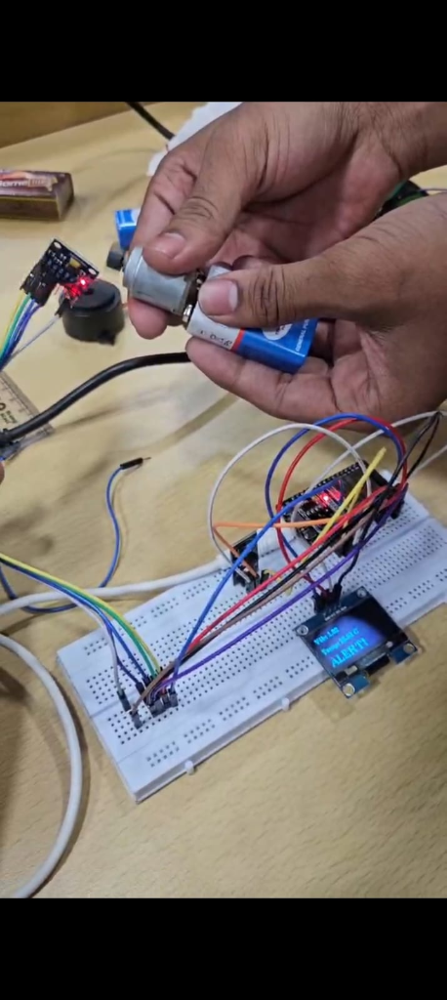
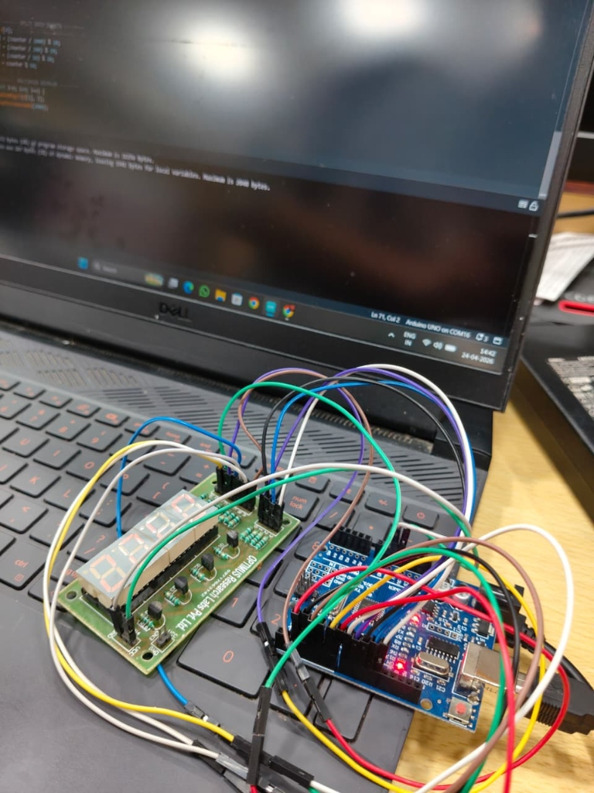
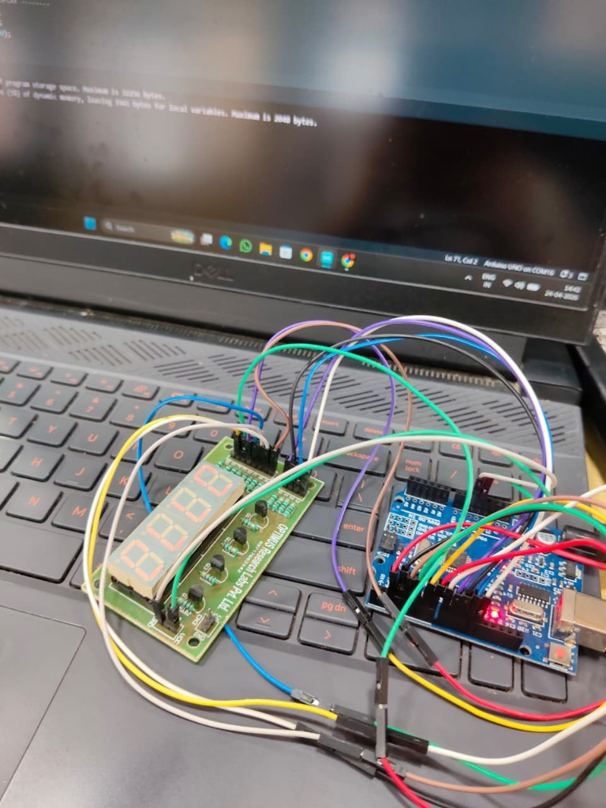

Operating at the intersection of **Full-Stack Software Development** and **Instrumentation & Control Engineering**. Drag the background to rotate the 3D grid, scroll to navigate, and hover over cards to explore the systems.
I specialize in bridging physical sensory electronics with scalable web frameworks. With a background rooted in **Instrumentation & Control Engineering (ICE)**, I design full-stack architectures that communicate smoothly from device controllers to cloud data pipelines.
I lead campus technical webinars, organize developer communities, and build highly responsive, premium web applications.
Beyond logic chips, circuits, and frameworks, I focus on acoustic wave coordination. I have been playing the **guitar** since the 4th grade, constantly exploring musical styles and instruments.
My musical spectrum has shifted dynamically—originating from solid Western configurations during school terms to classical compositions throughout my engineering college life.
An ultra-premium, interactive launchpad, beat machine, and step sequencer built with **HTML5 Web Audio API**, real-time canvas visualizers, and custom EQ dials.
A high-performance wellness and balanced scale logs management page utilizing a scalable **Next.js** database model.
A full-fidelity replica layout of the streaming platform, incorporating frontend interface modules and local API channels.
Responsive frontend music streamer integrating audio track controls, album layouts, and customized neon scroll elements.
Automated environmental dashboard tracking real-time pH, turbidity level, temperature, and water humidity metrics.

Predictive analytics sensor platform measuring device vibration cycles and hot zones as a preventative diagnostic mesh.


Seven-segment counting logic circuit wired with fast controller chips and physical clock controllers.
Comprehensive web learning management platform styled with smooth navigation tabs and aesthetic scroll grids.
Commercial business dashboard containing robust frontend models and standard responsive CSS blocks.
A high-density local campus developer community website designed with neon glowing matrices.
Demonstrating and validating custom IoT hardware solutions, sensor arrays, and dynamic web dashboards on-field.
Collaborating with peer engineering groups, faculty mentors, and industry observers to optimize water flow networks and predictive hardware diagnostics.
New Delhi, India 110045